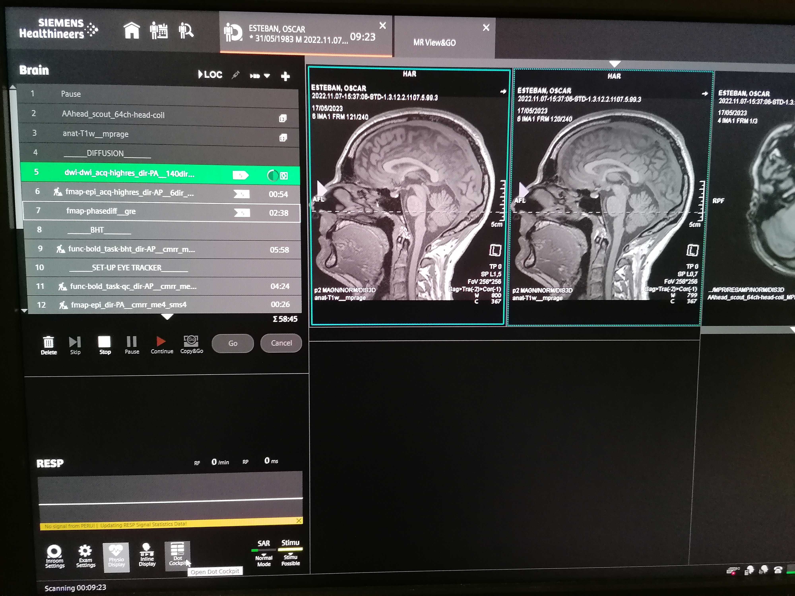
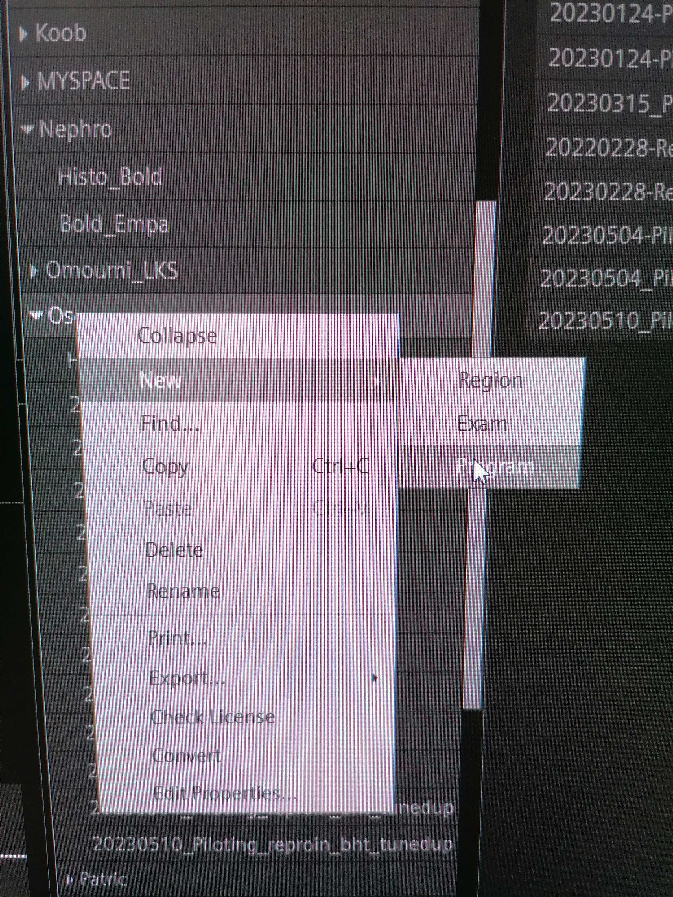
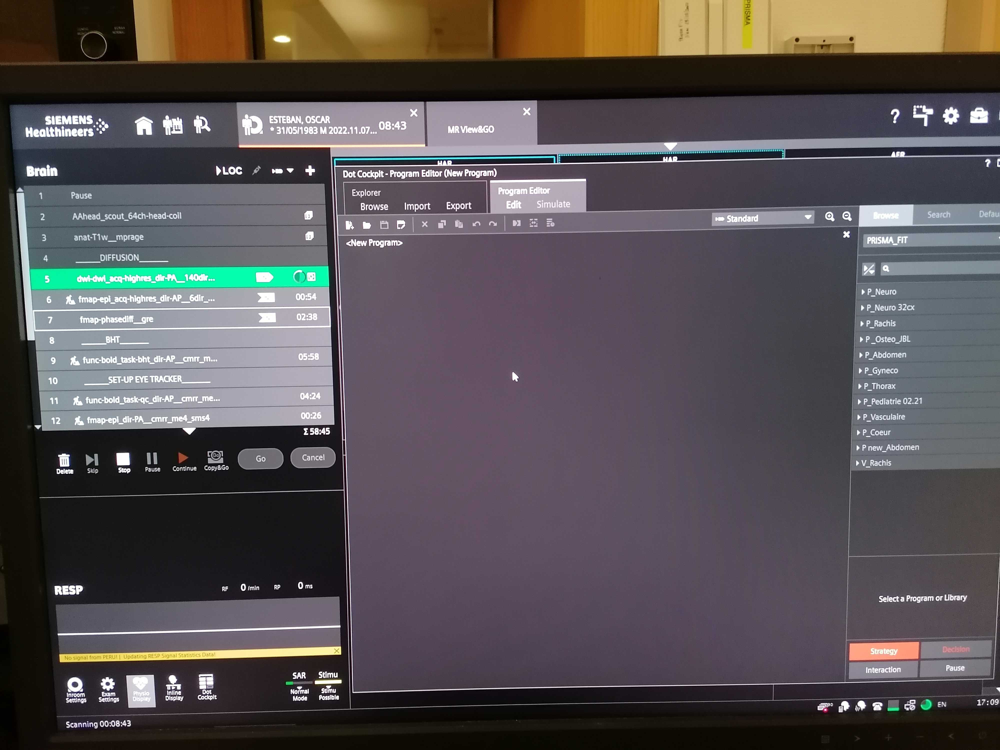
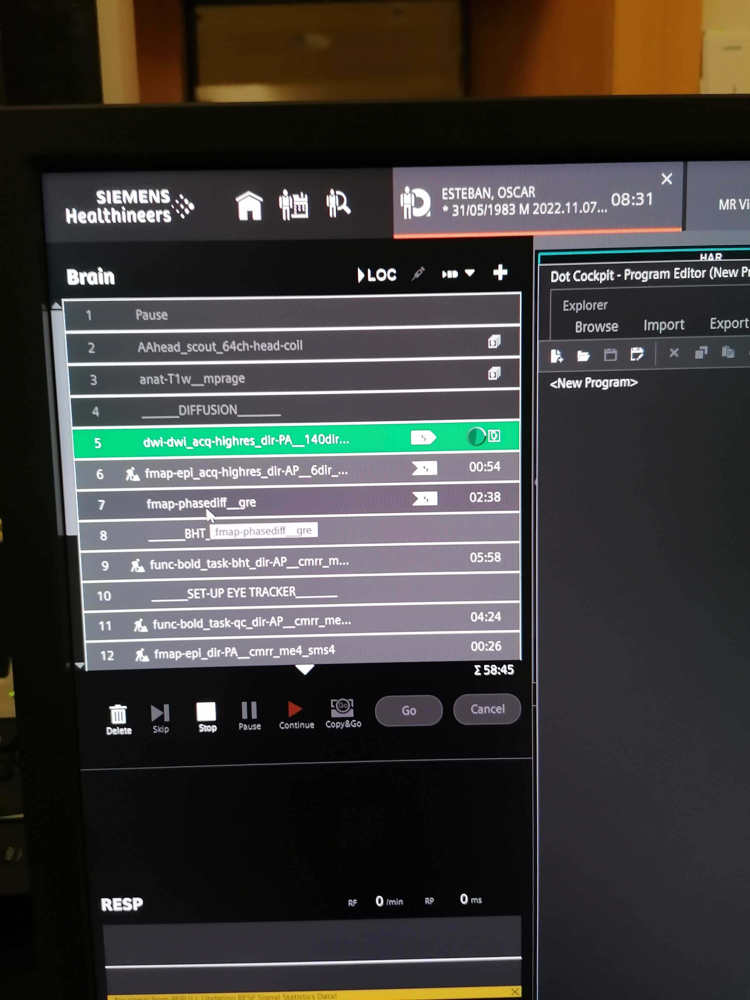
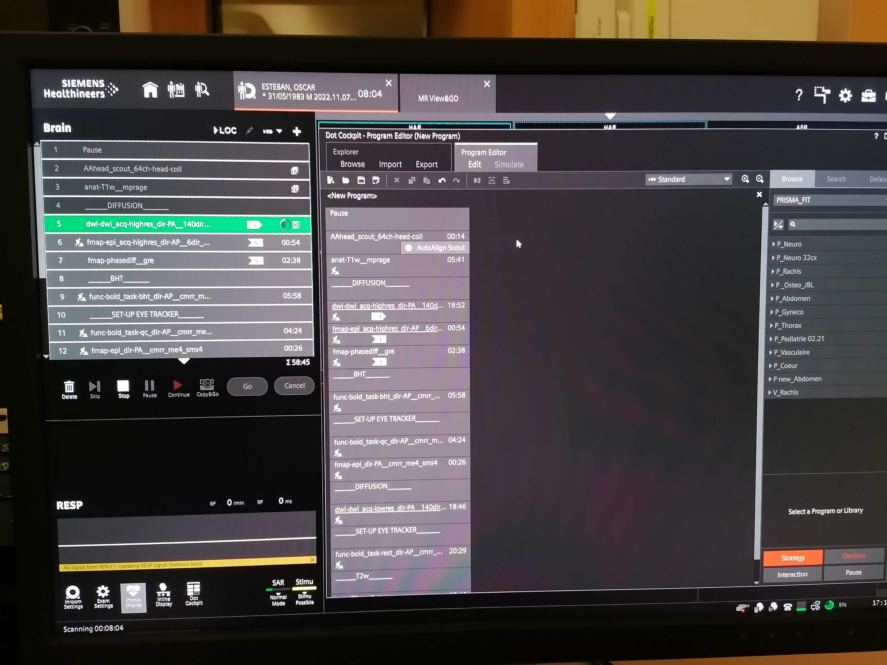
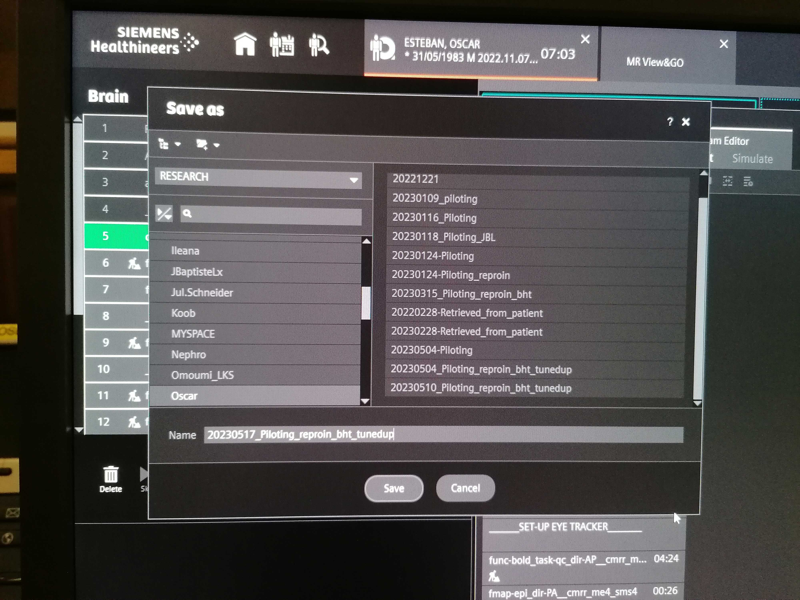

Preliminary work
Once, at the beginning of the project¶
Emergency procedures
It is critical you fully understand and study the emergency procedures to run an MRI scan at CHUV.
Install the gas analyzer (GA)¶
- Watch the gas analyzer (GA) video:
Install the BIOPAC¶
BIOPAC documentation
Get familiar with the BIOPAC setup and read through the hardware documentation
- Set up the line frequency switches on the back of the BIOPAC amplifier depending on your country frequency to reduce noise. Both switches should be DOWN if your country's line frequency is 50Hz. Both switches should be UP if your country's line frequency line is 60Hz.

- Plug the different units of the BIOPAC together if it has not been done yet.
- Get familiar with the BIOPAC system:
- We use the BIOPAC to synchronize and output in a single file all the physiological recordings: cardiac pulsation, respiration and CO2 concentration.

- The AMI100C unit can receive up to 16 analog signals.
- The DA100C unit records the signal coming from the respiration belt. Plug the TSD160A unit on the DA100C.
- The ECG100C MRI unit records the electrical signal coming from the heart via the ECG. Plug the MECMRI-2 unit on the ECG100C unit.
- The SPT100 (solid state relay driver unit) is used to record triggers. A trigger appears as a vertical red line on your physiological recordings [INCLUDE IMAGE].
- We use the BIOPAC to synchronize and output in a single file all the physiological recordings: cardiac pulsation, respiration and CO2 concentration.
- Ensure that the Mode switch of the MMBT-S Trigger Interface Box adapter (pink color box) is set on the S position.
- Install the BIOPAC recording software (AcqKnowledge).
-
Create a template graph file (
EXP_BASE.gtl)Creating the AcqKnowledge's template graph file
- Creating a graph file requires the BIOPAC system powered up and connected to the ███ computer.
- Add the RB module
- Check the channel on top switch of the unit: the DA100C MUST be set on channel 1.
- Under the tab Analog, click on Add new module.
- Find the name of the BIOPAC unit corresponding to the DA100C.
- Set the module settings (gain, filters, etc.) corresponding to those of the configuration switches in the front of the module.
- When prompted to enter the calibration points, map the interval [-5, 0] to [0, 10]. You invert the sign of the interval for the interpretation to be more clear.
- Add the ECG module
- Check the channel on top switch of the unit: the ECG100C MRI MUST be set on channel 2.
- Under the tab Analog, click on Add new module.
- Find the name of the BIOPAC unit corresponding to the ECG100C.
- Set the module settings (gain, filters, etc.) corresponding to those of the configuration switches in the front of the module.
- When prompted to enter [calibration?], for the ECG you should map the interval ?? to ??.
- Add the GA module
- Confirm that the CO2 output of the GA is connected through the ANISO filter to the channel 3 of the AMI100C module.
- Under the tab Analog, click on Add new module.
- Select Custom and then indicate it is connected to channel 3 by selecting AMI/HLT - in3.
- When prompted to enter the calibration points, map the interval [0.03, 1.0] to [0, 10.0].
- Add the Digital inputs
- Under the tab Digital, click on Add new module.
- The parallel cable feeds into ports D8-D15.
- Configure the sampling frequency
- Configure the experiment length (at least 2.5 hours)
- Configure whether you want to collect directly to hard disk and autosave settings
- Save the experiment, making sure you choose a "graph template file" (with extension
.gtl)
Stimuli presentation: psychopy¶
- Prepare a laptop with a running Psychopy 3 installation AND the EyeTracker software. For these SOPs, the designated laptop for the experiments is ███.
- Fork the HCPh-fMRI-tasks repository under your user on GitHub.
- Clone the HCPh-fMRI-tasks repository:
- Set-up the original repository as upstream remote:
-
Log on ███ with the username ███ and password ███.
-
Clone the PsychoPy repository:
- Navigate to the Psychopy directory:
- Psychopy should not be installed with anaconda. If an anaconda environment is activated, run the following command to deactivate it:
- Update pip to the lastest version:
- Install bdist_mpkg, py2app and attrdict:
- Install Psychopy using the following command:
-
Open Psychopy, open the experiment-files corresponding to each task:
-
task-rest_bold.psyexp(resting-state fMRI):- time it to confirm the length, and
- check that the movie is played.
-
task-bht_bold.psyexp(breath-holding task, BHT):- time it to confirm the length, and
- check that the movie is played.
-
task-pct_bold.psyexp(positive-control task, PCT) :- time it to confirm the length, and
- check that the movie is played.
Remember to time the three functional MRI runs (rest, qct, bht)
-
Eye-tracker: EyeLink Software installation¶
-
Log on ███ with the username ███ and password ███.
-
Enable Canonical's universe repository with the following command:
- Install and update the ca-certificates package:
- Add the SR Research Software Repository signing key:
- Install the EyeLink Developers Kit:
- Install the EyeLink Data Viewer:
Setting up the scanner protocol at the MR console¶
Important: follow Reproin conventions
When assigning names to the MR sequences in the protocol, make sure to follow the Reproin conventions to maximally facilitate the conversion into BIDS.
Once the protocol is decided upon, and after any updates, make sure of storing the protocol.
Login as an advanced user to save protocol
As a good practice, always work as the standard user janedoe.
Change for advanced user mode if you want to save the protocol.
-
Simultaneously press the Tab + Delete + [→ on the control-computer's keyboard:
Username:
superjanedoePassword:
******
After three wrong password entries, access will be denied, and only a Siemens engineer will be able to unlock the MR scanner.
-
Update the Number of measurements in all
func-bold_task-*sequences, according to the previously recorded timings:\[N_\text{measurements} = L_t / \text{TR}, \quad t \in \{\text{bht}, \text{pct}, \text{rest}\},\]where \(L_t\) is the length of a particular task \(t\) (either BHT, PCT, or resting state) in seconds as timed before, and \(\text{TR}\) is the repetition time of the BOLD sequence, in seconds.
-
Now that you are logged in as an advanced user, save your protocol:
- Open the Dot-Cockpit window 
- In
Browse, find the right folder to save the protocol in (RESEARCH ⤷ Oscar). - Right click on the folder and select New ⤷ Program. This opens an empty page in the program editor  
- Select all the sequences you want to run from the sequence list and click right to copy. 
- Drag or paste the copied sequences in the program editor. 
- Once finished, click on the floppy disk icon (🖫) in the upper left to save.
- Give the protocol a relevant name starting with the date of acquisition in the format YYYYMMDD and click . 
- If desired, the protocol details can also be downloaded as a pdf on a peripherical USB key.
- Right-click on the protocol and select Print
- Save the PDF in your USB key.
- Make sure you save a different protocol for each of the four PE directions (i.e., AP, PA, LR, RL).
Every two months¶
Calibrate the GA¶
- Get a gas bottle with a known CO2 concentration between 5% and 10%.
- Connect the GA to the BIOPAC as described below and start recording signal.
- In the AcqKnoledge software, edit the configuration of the inputs, making sure you update the voltage range for input 3 (the GA), estimated as described in the GA's manual
- Update the template graph file (
EXP_BASE.gtl) with the calibrated input.
Three days BEFORE THE FIRST SESSION¶
- Verify that as part of the recruitement and screening procedure, you have sent a copy of the MRI Safety and screening form (EN|FR) to the participant over email and confirm reception by checking the 'First contact email sent' column in our recruits spreadsheet.
- Verify also that you confirmed that the participant has read and understood the document, and in particular, you double-checked that they do not have any MRI contraindications, by checking the 'Phone interview done' and 'Participant volunteer and eligible' column in our recruits spreadsheet.
- If the phone call interview was more than three days before the first session, call the participant again to reconfirm the following informations:
- Remind the participant that any jewelry should be removed prior to the scan.
- Indicate that they MUST shave the upper area of their chest where the ECG electrodes will be placed, if there is hair. The ECG electrodes MUST directly contact the skin.
- Confirm clothing:
- if allowed to wear street clothes, remind the participant to avoid clothing with metal or that would uncomfortable to lie in for the duration of the scan; otherwise
- remark the participant they will be given a gown and they will need to change before every session.
- Repeat at what time and where will you meet the participant.
- Verify that the participant has your phone number ███ to call you in case he gets lost.
- FEMALE PARTICIPANTS ONLY: Remind the participant that pregnant women cannot undergo our MRI protocols. Therefore, they will take a pregnancy test (which we will have prepared) before the first session.
- If participant has indicated nervousness or history of claustrophobia, organize a session to use the mock scanner.
BEFORE DAY OF SCAN¶
- Print the informed consent form (first session only), an MRI safety screener (EN|FR) and a receipt form for each participant that will get scanned.
- Make sure you have internet access, and update the HCPh-fMRI-tasks repository on ███:
- On the ███ laptop, open a terminal and execute
conda deactivate. - Open psychopy 3 by typing
psychopy - Load in the different experiments and check for proper functioning:
-
task-rest_bold.psyexp(resting-state fMRI):- time it to confirm the length, and
- check that the movie is played.
-
task-bht_bold.psyexp(breath-holding task, BHT):- time it to confirm the length, and
- check that the movie is played.
-
task-pct_bold.psyexp(positive-control task, PCT) :- time it to confirm the length, and
- check that the movie is played.
-